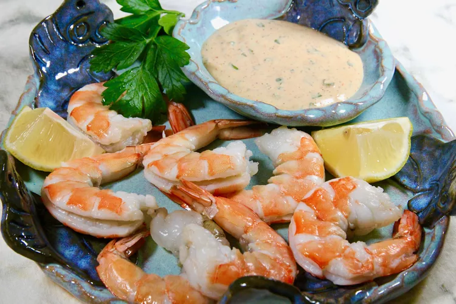

Po' Boy Remoulade Sauce

Description
This three-meat sandwich is crispy on the outside, tender and cheesy on the inside, with salami being the star of the show. Your air fryer crisps up the meat and toasts the bread at the same time and in only 5 minutes. Feel free to sub mozzarella cheese for the provolone.
Ingredients
- ½ cup mayonnaise
- 3 tablespoons Creole or spicy brown mustard
- 2 tablespoons ketchup
- 1 tablespoon chopped fresh chives
- 1 tablespoon minced fresh parsley
- 1 teaspoon minced garlic
- ½ teaspoon Worcestershire sauce
- ⅛ teaspoon freshly squeezed lemon juice
- ⅛ teaspoon ground paprika
- 1 pinch cayenne pepper, or to taste
- salt and ground black pepper to taste
Steps
- Mix mayonnaise, mustard, ketchup, chives, parsley, garlic, Worcestershire sauce, lemon juice, paprika, cayenne, salt, and pepper together until well combined.